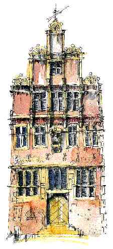
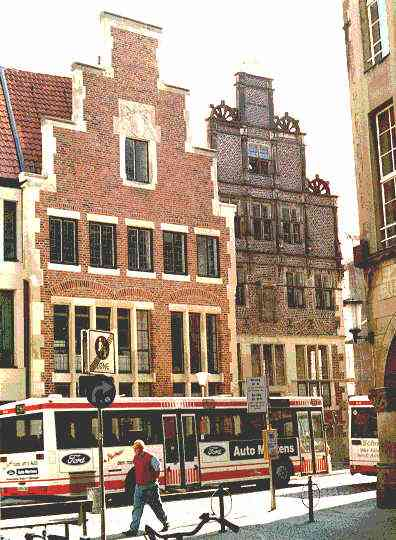

Tip: door uw venster te versmallen zult u gemakkelijk de teksten kunnen lezen. U kunt daartoe de rechter scrollbar verslepen (als u met de muis boven de rechterrand zweeft).
BIJDRAGEN OVER: |

|
ZANNEKIN-Ontmoetingsdag: Munster 14 oktober |
Op zaterdag 14 oktober a.s. gaat onze eerstkomende Ontmoetingsdag door in Munster. In de voormiddag zijn we te gast in het Haus der Niederlande, Alter Steinweg 6-7, D.48143 Munster, waar de Fachvereinigung Niederländisch gehuisvest is. Er is volop parkeerruimte op de nabijgelegen Hindenbrugplatz. We komen samen aan het Haus der Niederlande voor volgend programma om:
Mededelingen |
MUNSTER |
De geschiedenis van de stad Munster begint met de Friese (Utrechtse) missionaris Liudger (742-809), die na afloop van de Saksische oorlogen van Karel de Grote opdracht had gekregen, de West Saksen tot het Christendom te bekeren. Liudger vestigde zich in een bestaande omwalling van aarde en hout, die bij opgravingen in de tegenwoordige domberg aan het licht is gekomen en had de naam Mimigernaford. Liudger, in 805 tot bisschop gewijd, stichtte nabij deze omwalling een klooster (monasterium) en bouwde een aan Paulus gewijde kerk, de eerste Dom van Munster.
Opgravingen hebben aangetoond, dat deze "domburcht" niet alleen door de bisschop en zijn geestelijkheid maar ook door hoge ambachtslieden, werd bewoond en later met de vorming van het parochiestelsel werd Mimigernaford uiteraard het centrum van de kerkelijke organisatie. Vanaf de 11e eeuw vinden we voor het eerst de plaatsnaam Munster vermeld.
Rondom het in 1040 in aanwezigheid van keizer Hendrik III gewijde St.-Marienklooster op de linker oever van de AA (Uberwasser) ontstond een nederzetting van kooplieden. Toen echter in jaar 1121 de bisschoppelijke residentie tijdens een opstand van hertog Lothar van Saksen in brand werd gestoken, sloten de kooplui en ambachtslieden zich op politiek gebied nauw aaneen. Deze samenwerking leidde langzamerhand tot het ontstaan van de (handels)stad. Hoewel de juiste datum van het ontstaan van de stad niet precies kan worden vastgesteld, werd er in de loop van de 12e eeuw een eigen politieke gemeente gevormd, die zich losmaakte van de bisschoppelijke rechtspraak. De trapsgewijze ontwikkeling werd rond het jaar 1173 min of meer afgesloten door de samenvoeging van de oude binnenstad (Altstadt) op de rechter AA oever en de kleine nederzetting Uberwasser en tegen 1200 had Munster al volle stadsrechten. Deze bloeiperiode van de stad, tijdens de heerschappij van de Staufen, stond in het teken van de algemene ontplooiing van Duitse steden. Uit de kringen van de tot aanzien gekomen kooplui ontstond het patriciaat de "erfmannen", die de raad vormden. Deze raad dwong de bisschop uiteindelijk een maximum aan gemeentelijke zelfstandigheid af en maakte als belangrijkste stad van het Munsterland, naast het domkapittel en de ridders aanspraak op toezicht en medezeggingsschap bij het besturen van het land. Munster werd lid van de Hanze en in 1494 besloot de Hanze-dag in Lubeck, Munster voortaan als belangrijkste stad in Westfalen te beschouwen. Zo werd de stad hoofdstad van het Westfaalse Hanzekwartier.
Tijdens de Munsterse stichtsvete - die in 1457 werd beëindigd - ontnamen de gilden de erfmannen met geweld de alleenheerschappij over de stad. Sindsdien gaven de gilden de toon aan in de burgerij. Deze hadden in de 14e eeuw (rond 1335) het trotse raadhuis - waarvan de voorkant door kunsthistorici als "de meest volmaakte uit de rijke profane gotiek" geprezen wordt - laten bouwen. Talrijke kerken en kloosters en prachtige gilde- en burger-huizen werden in deze periode gebouwd of verbouwd om de rijkdom van de stad te kunnen etaleren. Het was in deze periode dat schilderkunst, geïnspireerd door de grote Vlaamse meesters Rogier van de Weyden en Dirck Bouts, en beeldhouwkunst tot grote bloei kwam.
Een van de belangrijkste beeldhouwersfamilie was de familie Brabender. De familienaam duidt er waarschijnlijk op dat de familie vanuit Brabant naar Munster is geëmigreerd, en zeker door het Brabants realisme (Claus Sluter en andere) werd beïnvloed. De naam Heinrich duikt voor het eerst op 19 januari 1491 voor het eerst op. Hij wordt dan meester genoemd, en is vermoedelijk rond 1460 geboren. Veel van zijn werk is aan de buitenkant van de Sint-Pauluskerk te bewonderen o.a. de Intocht van Jeruzalem en het Oordeel van Pilatus. (Het origineel beeldhouwwerk is in het Landesmuseum te bewonderen). Zijn zoon Johann zette het atelier van zijn vader voort maar gebruikte hier en daar vroeg-renaissance ornamenten. Hij is bekend vanwege zijn talloze epitafen in Munsterlandse kerken.
Na de hervorming van de domschool door Rudolf von Langen (+ 1519) werd Munster het belangrijkste centrum van het humanisme in Westfalen. Dat er ook in Munster onder de oppervlakte diepgaande sociale spanningen verborgen waren, bleek tijdens de periode van de wederdopers. De ontevredenheid van de gilden richtte zich tijdens de reformatie tegen de clerus en de kloosters, die geen belasting hoefden te betalen, terwijl de gewone man aanslag op aanslag kreeg. Rond 1531/2 werd in alle parochiekerken van Munster Luthers leer gepredikt. Een wegbereider van deze leer was kapelaan Bernhard Rothmann, bij wie zich de lakenhandelaar Knipperdollinck, een hartstochtelijk voorvechter van politieke vernieuwingen, aansloot. Toen beide zich bij de gemeente der wederdopers hadden aangesloten en de "profeet" Jan Matthys naar Munster kwam, werden alle inwoners, die zich niet wilden laten herdopen, verdreven. Fanatiekelingen, gesteund door een grote stroom vreemdelingen, met name uit de Nederlanden, stichtten in de stad het "Nieuwe Sion" en verwachtten met Pasen 1534 de terugkeer van Christus op aarde. Lange tijd belegerden huurlingen van bisschop Frans van Waldeck tevergeefs de muren van de stad. Na de dood van Matthys in 1534 had de vroegere Leidse kleermaker en waard Jan Bockelson (Beuckelszoon) zich tot koning uitgeroepen. Hij schafte de bestaande orde af, voerde de veelwijverij in en regeerde als despoot. Zijn pogingen, door middel van uitzending van "apostelen" de beweging van de wederdopers in het Munsterland en in de Nederlanden te doen ontvlammen, mislukte en in de Johannis-nacht van 1535 stortte het wederdoperrijk door honger en verraad ineen. De landsknechten van de bisschop bestormden de stad en doodden tijdens een verschrikkelijk bloedbad bijna alle bewoners. Drie van de overgebleven aanvoerders "koning" Jan van Leiden, Knipperdollinck en "kanselier" Krechting, werden op bevel van de bisschop op 13 januari 1536 terecht-gesteld. Zij werden met gloeiende tangen tot de dood toe gemarteld. Hun lijken werden als afschrikwekkend voorbeeld in ijzeren kooien aan de Lambertitoren opgehangen. (De kooien die er nu hangen zijn replika's, de originelen bevinden zich in het Historisch Museum van Munster.)
Na de herovering herstelde Munster zich zo snel, dat het aantal inwoners 50 jaar later alweer tegen de 10.000 liep. De heerschappij van de wederdopers had welvaart en cultuur nauwelijks kunnen ontwrichten. Zo werd in de laatste kwart van de 16e eeuw het gildehuis van de Kooplieden het Kramers-ambthaus (nu het Haus der Niederlande) in 1588 gebouwd. Ionische halfzuilen rustend op grote consoles en het typisch Munsters renaissance ornament, de opengewerkte concha (schelp) met bollen versierd, vindt men haast alleen maar in het Munsterland en wordt ook wel eens Welsche gevel genoemd.
Ook tijdens de Dertigjarige Oorlog, toen Munster aan de kant van de
keizer stond en geen vijand de geweldige vesting kon bedwingen, bleef de
stad van een zekere bloei genieten. In het jaar 1641 werd Munster - samen
met Osnabruck - tot plaats van samenkomst voor de vredesonderhandelingen
uitgekozen. De stad had nu het hoogtepunt van haar aanzien bereikt. Als
vredesbemiddelaars traden in Munster, waar zich een bloeiend maatschappelijk
leven had ontwikkeld, de pauselijke nuntius Fabio Chigi en de ambassadeur
van Venetië op. Hier voerden de afgezanten van de keizer, keurvorsten
en van de Franse rijksstanden samen met de Spanjaarden onderhandelingen
met Franse diplomaten, Portugezen en Catalanen, die een verbond met de
Fransen wa-ren aangegaan. De Zweden voerden onderhandelingen in het nabije
Osnabruck. In het geheel zijn er ongeveer 230 namen van congresgemachtigden
inclusief vertegenwoordigers van steden bekend. Er wordt wel beweerd dat
het aantal vreemdelingen in die tijd bijna even hoog was als het aantal
inwoners!
Op 30 januari 1648 werd er als voorbode van de algemene vrede een aparte
vrede tussen Spanje en de Staten-Generaal gesloten, waarbij de Noordelijke-
Nederlanden
door Spanje onafhankelijk werd verklaard. Op 15 mei werd deze vrede in
de raadzaal van Munster feestelijk bezworen en kon Gerard ter Borch aan
zijn bekend geworden schilderij beginnen. Na vier jaar onderhandelen werd
op 24 oktober 1648 in het bisschoppelijk paleis aan het Domplein in Munster
de algemene vrede door de diplomaten ondertekend. De burgerij, wier gevoel
van eigenwaarde door het congres belangrijk was gestegen, probeerde weer
een stem in het bestuurskapittel te krijgen maar het resultaat was vernederend.
Door prinsbisschop Christop Bernhard van Galen (onze Bommen Berend) werd
de stad in 1661 gedwongen zich onvoorwaardelijk te onderwerpen. Voorts
trok de bisschop alle privileges in en gaf zijn ingenieur Peter Pictorius
in 1662 opdracht tot de bouw van een citadel als dwangburcht, op de plaats
waar tegenwoordig het slot staat. De politieke rechten van de gilden werden
ingetrokken en de burgers monddood gemaakt. Uit afkeer van zijn hoofdstad
resideerde de bisschop in Coesfeld en in Munster legerde hij een sterk
garnizoen. Hoewel Munster door van Galens opvolger Furstenberg weer het
recht tot het houden van raadsverkiezingen werd verleend, is de verdere
ontwikkeling in belangrijke mate het gevolg van het feit dat de stad bisschoppelijke
residentie en gedurende de wintermaanden verblijfplaats van inheemse edellieden
was, die hier hun adellijke hoven lieten bouwen. Veel van deze adellijke
hoven zijn door de zoon van Peter Pictorius, Gottfried Laurenz Pictorius,
ontworpen en tonen heel duidelijk de invloed van de Hollandse klassicistische
bouwkunst met architecten als Jacob van Campen, zijn leerling Steven Vennecool
en Pieter Post.
Kenmerkend voor het stadsbeeld in de laatste helft van de 18e eeuw waren de bouwwerken van de grote architect Johann Conrad Schlaun (1695-1773), die samen met Balthasar Neumann voor de pronkzuchtige keurvorst Clemens August de Clemenskerk (1744-1754) bouwde. De prachtige erfelijke drostenij (Erbdrostenhof), die gedurende de Zevenjarige Oorlog een tijd lang als onderkomen voor hertog Ferdinand van Brunswijk dienst deed, werd eveneens door Schlaun ontworpen (1754-1747).
In 1759 werd de stad wederom zwaar belegerd en gedwongen de Fransen en Britten geld en voedsel te verschaffen. Op zijn oude dag zette Schlaun vanaf 1767 tot 1772 met de bouw van het prachtige slot de kroon op zijn omvangrijke werk als architect. Tijdens de verlichting kwam het geestelijk leven van Munster door het energieke beleid van minister Frans van Fürstenberg, die de keurvorst van Keulen tot regent van het klooster had benoemd, tot bloei. Fürstenberg hervormde in 1776 het hele scholenstelsel; bovendien stichtte hij de universiteit die in 1780 werd geopend. De Napoleontische tijd maakte een einde aan het bestaan van het oude prinsbisdom. Nog voor de uiteindelijke beslissing van de "Reichsdeputationshauptschluss" werd de stad in 1802 door Pruisische troepen onder leiding van Blücher bezet en reorganiseerde Baron von Stein het bestuur. Na de nederlaag van 1806 verloor Pruisen echter zijn Westfaalse gebiedsdelen en werd het door de Franse keizer bij het groothertogdom Berg gevoegd, om het uiteindelijk in december 1810 in het keizerrijk ingelijfd te worden. In 1813 kwamen de Pruisen terug en in 1816 werd Munster de hoofdstad van de nieuw gevormde provincie Westfalen.
Helaas werd tijdens de Tweede Wereldoorlog 92% van de historische oude
binnenstad en 67% van de gehele stad door meer dan honderd bomaanvallen
verwoest, maar nog steeds is deze stad een bezoek meer dan waard.
Over de rol van Liudger (Ludger of Ludgerus) en over de geschiedenis
van Munster met betrekking tot de Nederlanden, verschenen in ons jongste
jaarboek volgende bijdragen: Het leven van Ludger (Jan van Tongeren),
Liudger
en Karel de Grote (H. Veldman), Het Munsters Anabaptisme en de Zuidelijke
Nederlanden (F. van der Pol), De Tachtigejarige Oorlog en het Westmunsterland
(H.Terhalle).
Het 'Haus der Niederlande' te Munster |
Van de eertijds 17 gildehuizen in Munster is vandaag nog slechts het
uit 1589 daterende Kramerambtshaus op de Alten Steinweg 7 - thans het Haus
der Niederlande - overgebleven. Het werd destijds opgericht door de
rijke Munsterse Kramergilde, meet heeft doorggen de eeuwen vele functies
vervuld. Mede door zijn architectuur-historische waarde is het een beschermd
monument geworden.
Het Kramerambtshaus kwam in 1842 in het bezit van de stad die er haar
Berg van Barmhartigheid in vestigde. In 1873 werd het de zetel van het
Westfälischen Provinzialsvereins für Wissenschaft und Kunst.
Vanaf 1909 tot aan het einde van de Tweede Wereldoorlog werd het als bibliotheek
benut. Na de oorlog werd het kortstondig een noodkerk en daarna een cultureel
centrum, inclusief bibliotheek.
Toen het voor al deze functies te eng werd verhuisde de stadsbibliotheek
naar een nieuw pand en kwam de weg vrij voor de nieuwe bestemming die het
- als Haus der Niederlande - sindsdien vervult. Sindsdien zijn daar
de drie instellingen van de Westfälischen Wilhelms-Universität
ondergebracht die zich met de Nederlanden (Noord en Zuid) bezig houden.
De meest representatieve ruimtes ervan worden voor culturele manifestaties
- op 16 oktober voor de ZANNEKIN-Ontmoetingsdag - benut.
Het hooggestrekte renaiscancegebouw vormt met zijn rijk versierde gevelfront
een ware blikvanger in de Alten Steinweg. De bakstenen trapgevel rust op
een voetstuk van ionische halfzuilen. De trappen van de puntgevel zijn
versierd met halve wielen, een motief dat stamt uit het Wesergebied. Middenin
de bovenste verdieping wordt het front opgesmukt door een figuur dat de
Gerechtigheid uitbeeldt. Het geheel vormt een bijzonder goed geproptioneerde
aanblik.
Alhoewel het gebouw in zijn uiterlijk weinig van het oorlogsgeweld
te lijden had, werd het dak zwaar beschadigd door een bominslag. Bij de
restauratie werd vooral de eerste verdieping grondig heringericht. Het
gelijkvloers, met de gildezaal en de haardkamer behielden evenwel hun historische
structuur.
Tegelijk met de restauratie van het Kramerambtshaus werd op het aanpalend
perceel het nieuwe bibliotheekgebouw opgericht. De voorgevel van deze nieuwbouw
kreeg eveneens een - in vergelijking tot zijn buur - eenvoudige en sobere
trapgevel, waardoor de iets dieper liggende historische gevel niettemin
als het ware op de "voorgrond" blijft.
Bron: internet: http://wwwkram.uni-muenster.de/HausDerNiederlande/
Van de Voorzitter |
Marten Heida
Prins Willem Alexanderpark 53
NL 3905 CB Veenendaal
Tel. 0318-510 087
Wetenschappers rond Keizer Karel |
De regeringsperiode van Keizer Karel is een tijd van grote wetenschappelijke
creativiteit. Het aanzien van de wereld is in beweging: ontdekkingsreizigers
komen terug met verhalen over onbekende werelddelen, het humanisme en de
reformatie brengen nieuwe visies op de samenleving naar voren. De boekdrukkunst
zorgt voor een ongekend snelle verspreiding van kennis en ideeën.
Oude tradities worden bediscussieerd, vergeten klassieke kennis herleeft,
eigen onderzoek haalt de bovenhand op schoolse geleerdheid.
De tentoonstelling Wetenschappers rond keizer Karel toont een
prachtige collectie van anatomische en botanische platen, eeuwenoude handschriften,
boeken en prenten, historische landkaarten, astronomische instrumenten
en astrologische kalenders. Sommige stukken zijn voor het eerst te zien
in België. Grote en kleine meesterwerken van kunst en ambacht illustreren
de ambitieuze zoektocht van de wetenschap ten tijde van Keizer Karel. Alle
grote namen zijn vertegenwoordigd, maar de tentoonstelling brengt ook minder
bekende geleerden voor het voetlicht. De topstukken uit de anatomie, botanie
en cartografie zijn er te zien, maar ook de getuigen van weerstand, verdeeldheid
en censuur.